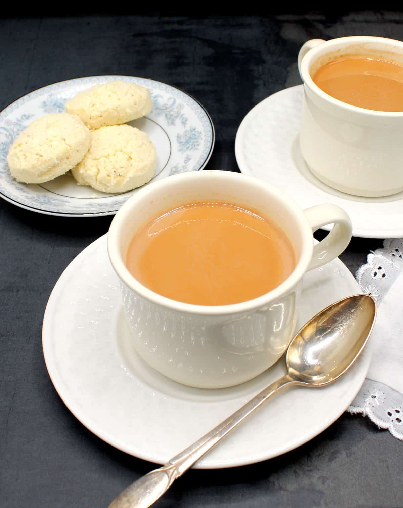

Masala Chai

Description
Chai is a fragrant and flavorful tea blend that originated in India. It
combines black tea with a variety of spices such as cardamom, cinnamon,
ginger, and cloves, and is typically brewed with milk and sweetened with
sugar or honey. It is a warming and comforting drink perfect for any time
of the day.
Ingredients
- 2 cups water
- 2 cups milk (dairy or non-dairy)
- 2 tablespoons loose black tea or 4 black tea bags
- 4-6 cardamom pods, lightly crushed
- 1 cinnamon stick
- 4-6 whole cloves
- 1-inch piece of fresh ginger, sliced
- 2-4 tablespoons sugar or honey (to taste)
- Optional: a pinch of black pepper, a star anise
Steps
-
Prepare the spices: Lightly crush the cardamom pods and slice the
ginger.
- Boil water: In a medium saucepan, bring the water to a boil.
-
Add spices: Add the cardamom pods, cinnamon stick, cloves, ginger, and
any optional spices to the boiling water. Reduce the heat and let it
simmer for 5-10 minutes to allow the flavors to infuse.
-
Add tea: Add the loose black tea or tea bags to the spiced water and let
it simmer for another 2-3 minutes.
-
Add milk and sweetener: Pour in the milk and add the sugar or honey.
Stir well and let it simmer for an additional 5 minutes. Be careful not
to let it boil over.
-
Strain and serve: Remove the saucepan from heat and strain the chai into
cups using a fine mesh strainer. Serve hot.